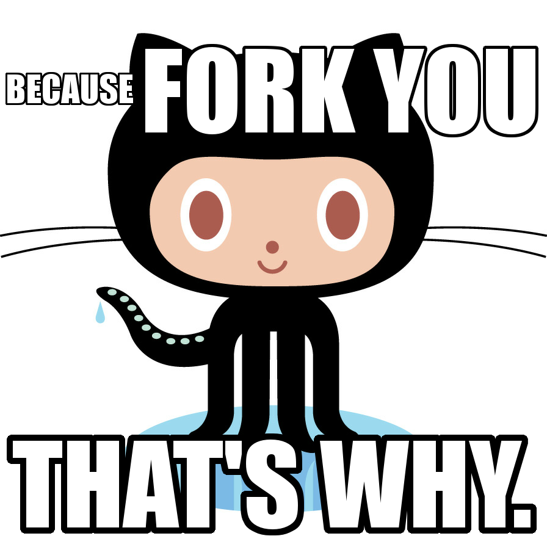

Gitting real with octocat!
Version Control, Git and Github.
01/11/2014
Version Control is a way to manage your files, through repositories who have monitored access. Every change is documented with who made the change, why it was made, if it is a bugfix, new feature, etc. Using Version Control is essential when working with teams, because it prevents you from overriding your peers's works and makes it easy to merge changes into the main project. Git is a distributed version control system, which means it will keep the project but everyone invited (To work, to watch, to study, take your pick!) can get a copy of it! After you take your copy, you can do whatever you want with it and it won't alter the main project. With this you can create new features or remove old features and see if implementing or removing them will break the code, without actually breaking the original, isn't that great? Sometimes you work a lot only to find out that something is not working as intended anymore, using git you can just ask octocat for an older version that was working and resume working from there. It is surprisingly easy to find the version you are looking for, since you should be commenting what every updated version does when you commit it! So why should I choose Git and Github?
On git, every working directory is effectively a fork! It comes with a complete history, full version tracking capabilities and it doesn't require network access. Plus it's free, who doesn't love free stuff? Git is very fast, scalable, trustworthy and compatible with existing systems and protocols. Github is very popular and believe it or not, it is a social network! It provides feeds, followers, wikis, etc. Even though github is used mostly for code, it supports many formats and features. It also has an Enterprise Version used for large-scale software to host repositories behind a corporate firewall. Github saves your main project and you can access or fork it from anywhere with an internet connection.